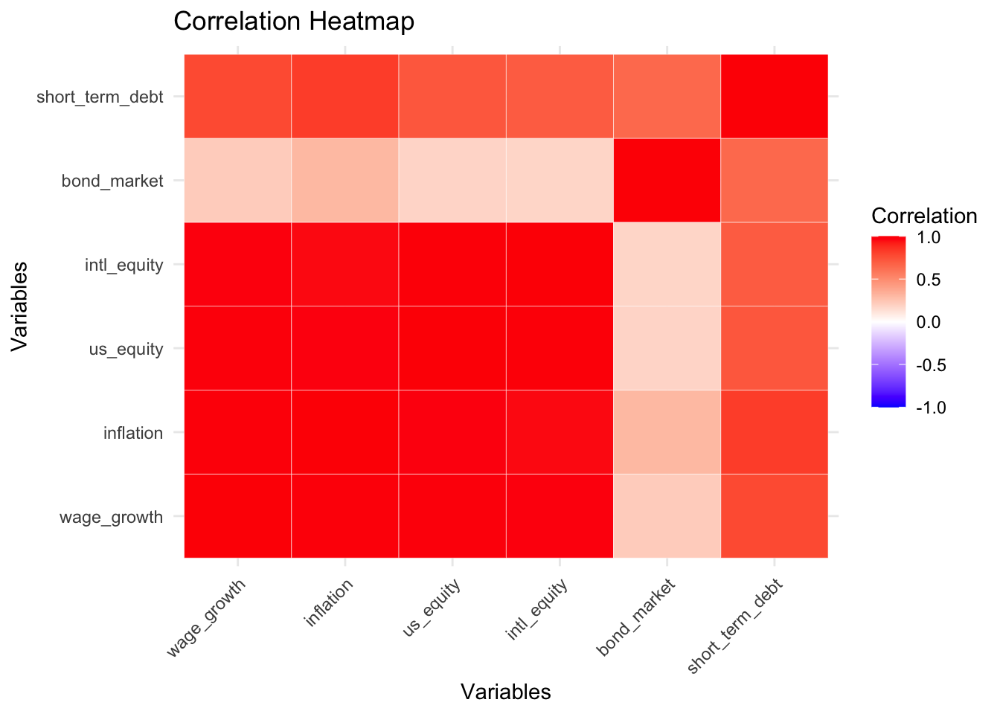
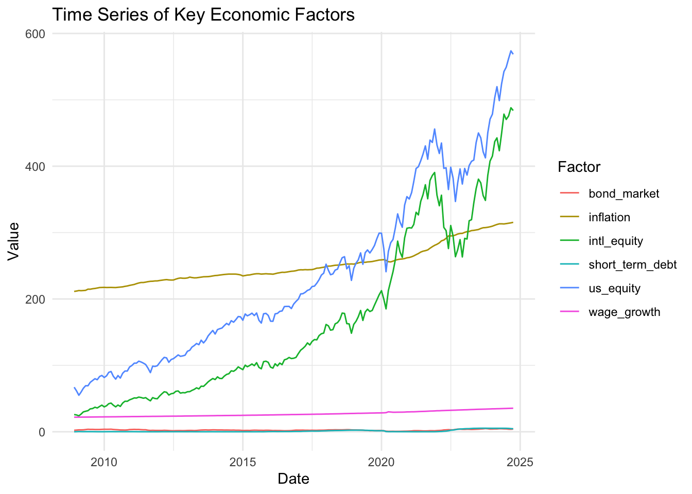
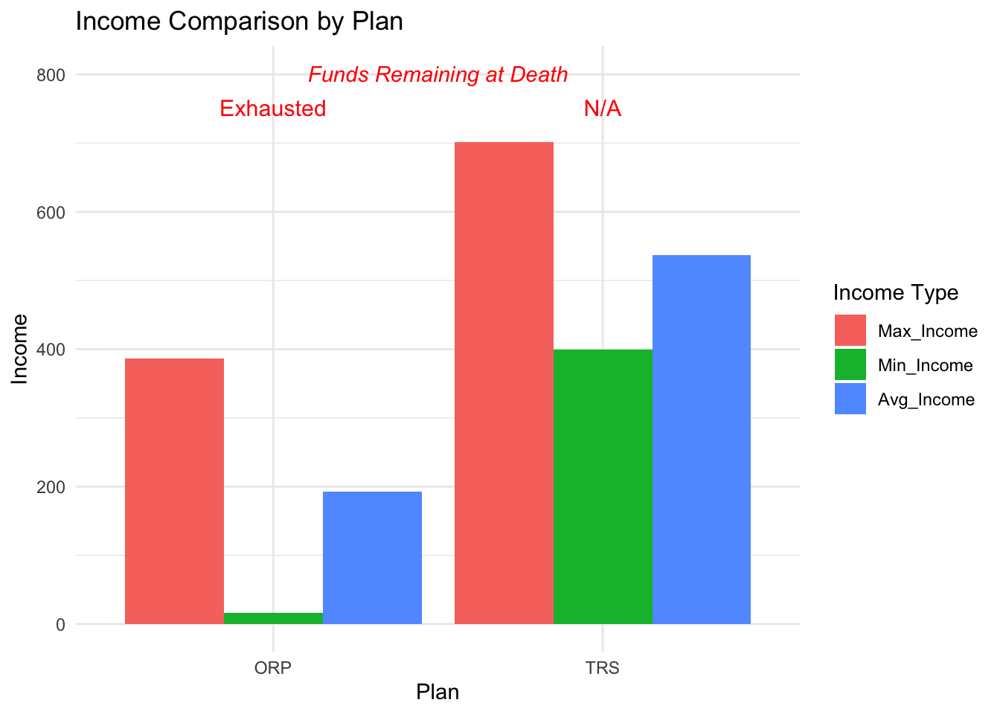
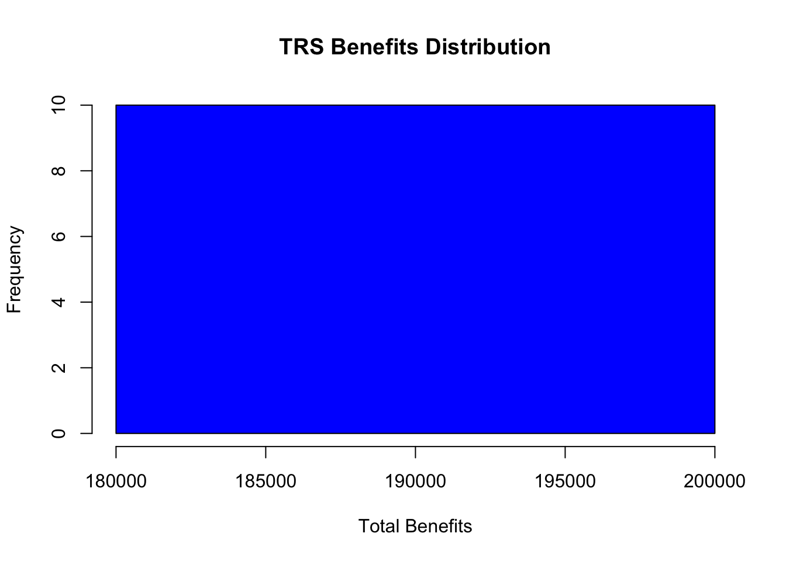
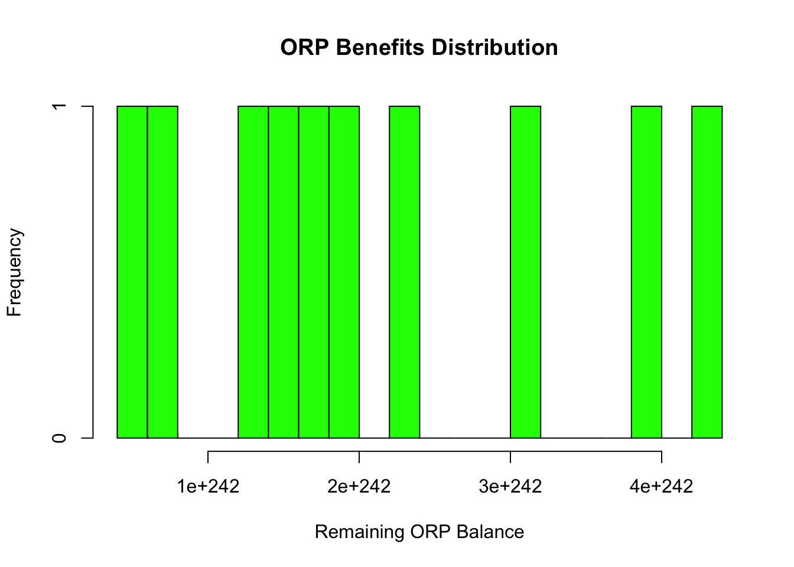
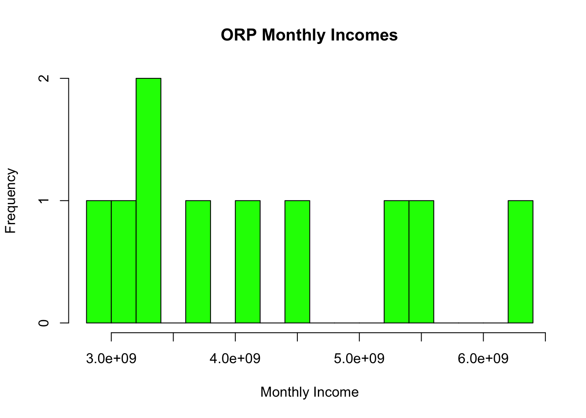
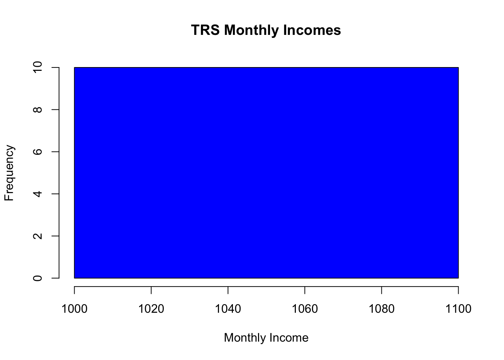
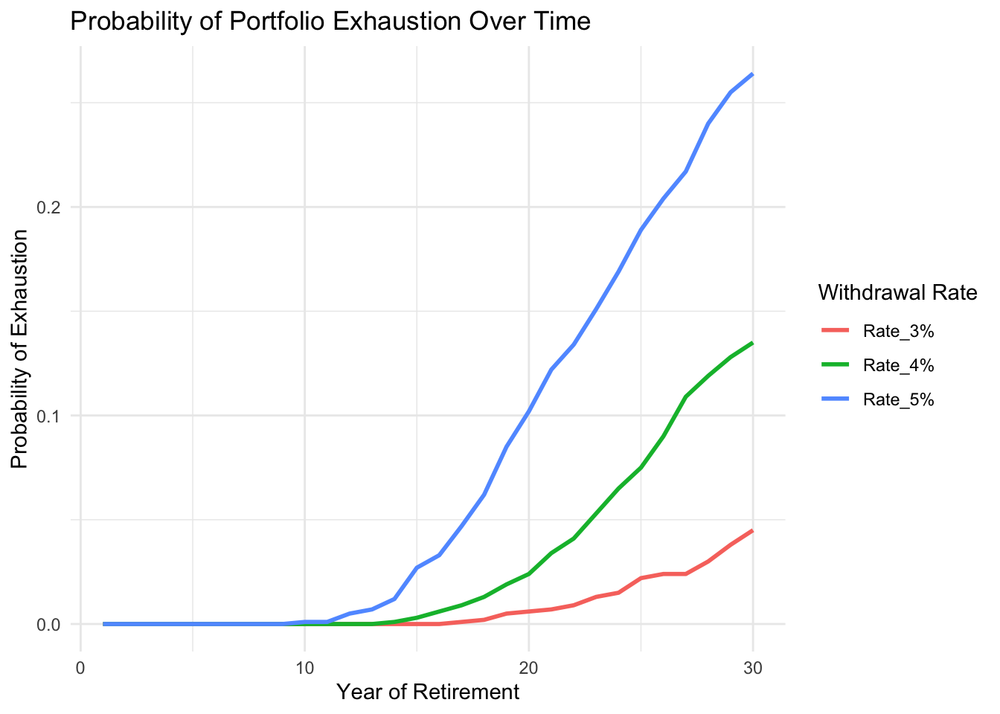

We are exploring the financial decision-making process for new faculty at CUNY, who must choose between two retirement plans: the Teacher’s Retirement System (TRS) and the Optional Retirement plan (ORP). This decision is critical and irreversible. Thus, a critical evaluation is essential.
Using data-driven methodologies, this report aims to provide insight into the factors influencing the optimal choice for different individuals and scenarios.
The analysis relies on the historical data and re sampling to simulate potential outcomes for each retirement plan. Key components of the report includes:
Acquiring financial data through a password-protected API.
Employing bootstrap resampling to estimate probability distributions for outcomes.
Investigating the impact of variables such as market returns, inflation, starting salary, and retirement age on decision-making.
Exploring how individual demographic and actuarial assumptions, as well as risk tolerance, influence the optimal retirement strategy.
Task 1 & Task 2
We have registered for AlphaVantage API key, securely stored it, and configured my R environment to interact with the API. By leveraging the AlphaVantage API, I aim to retrieve data such as time series stock information, exchange rates, and other financial metrics to support my project’s objectives, ensuring best practices for security and data handling throughout the process.
Task 2
Similar to Task 1, we have now registered for the FRED API key, securely stored it, and configured my R environment to interact with the API.
we have fetched observations for a chosen data series (e.g., GDP) and organized it into a structured data frame. We are focusing on extracting accurate date-wise values, ensuring the value column is numeric for analysis, and validating the data’s time range through realtime_start and realtime_end.
Task 3: Data Acquisition
As our first step we begin by reading the Alpha Vantage and FRED API keys from local files. The current working directory is then dynamically retrieved, and a dedicated data directory is prepared to store output files. The script checks for the existence of this directory and creates it if necessary, establishing a consistent and organized location for saving data retrieved through API calls.
Code
# Load required librarieslibrary(httr2)library(dplyr)library(tidyr)library(lubridate)library(tibble)# Get the current working directorycurrent_path <-getwd()# Define the 'data' directory pathdata_directory <-file.path(current_path, "data")# Check if the directory exists, and create it if it doesn'tif (!dir.exists(data_directory)) {dir.create(data_directory)}alpha_vantage_api_key <-readLines(file.path(current_path, "Alpha_Vantage_API_key"))fred_api_key <-readLines(file.path(current_path, "FRED_API_key"))
Function to call API
We are now calling API to download the historical data for each data inputs mentioned below to begin with our Monte Carlo analysis
Code
#| Code-fold: true#| Code-summary: "show the code"# Define functions to fetch data from APIs# FRED API Functionfetch_fred_data <-function(series_id, api_key) { response <-request("https://api.stlouisfed.org/fred/series/observations") %>%req_url_query(series_id = series_id,api_key = api_key,file_type ="json",observation_start ="2008-12-31",observation_end ="2024-11-30" ) %>%req_perform() %>%resp_body_json() data <- response$observations %>% purrr::map_df(~data.frame(date = .x$date, value =as.numeric(.x$value))) %>% dplyr::mutate(date =as.Date(date))return(data)}# AlphaVantage API Functionfetch_alpha_data <-function(function_type, symbol, api_key) { response <-request("https://www.alphavantage.co/query") %>%req_url_query('function'= function_type,symbol = symbol,apikey = api_key ) %>%req_perform() %>%resp_body_json() data <- response$`Monthly Adjusted Time Series`%>% tibble::enframe(name ="date", value ="values") %>% dplyr::mutate(date =as.Date(date),value =as.numeric(purrr::map_chr(values, "5. adjusted close")) )return(data)}
library(gt)# Convert correlation matrix to a data framecorrelation_df <-as.data.frame(correlation_matrix)library(DT)# Convert correlation matrix to a data framecorrelation_df <-as.data.frame(correlation_matrix)# Render interactive tabledatatable(correlation_df, caption ="Correlation Matrix")
Heat map
using the heat map visualization the correlation matrix, shows the strength and direction of relationships between variables. Dark red indicates strong positive correlations (close to 1), such as between intl_equity and us_equity or wage_growth and inflation, suggesting these variables move closely together. Lighter red areas, like the correlations involving bond_market, indicate weaker relationships, meaning these variables are less interdependent. The diagonal values represent perfect self-correlation (value of 1). This heatmap highlights key patterns and relationships, providing a foundation for deeper analysis.
Code
# Load necessary librarieslibrary(ggplot2)library(reshape2)# Convert correlation matrix to a long format for ggplot2correlation_long <-melt(correlation_matrix)# Plot the heatmapheatmap_plot <-ggplot(data = correlation_long, aes(x = Var1, y = Var2, fill = value)) +geom_tile(color ="white") +scale_fill_gradient2(low ="blue", high ="red", mid ="white", midpoint =0,limit =c(-1, 1), name ="Correlation") +theme_minimal() +theme(axis.text.x =element_text(angle =45, vjust =1, hjust =1)) +labs(title ="Correlation Heatmap",x ="Variables",y ="Variables")heatmap_path <-file.path(data_directory, "correlation_heatmap.png")ggsave(heatmap_path, plot = heatmap_plot, width =8, height =6)print(heatmap_plot)

Time-series graph
The time-series graph provides insights into how these economic factors change over time, showing their trends, growth patterns, and volatility. The most notable observation is the sharp upward trend in us_equity and intl_equity, particularly after 2015, reflecting significant growth in equity markets. In contrast, inflation shows a steady and gradual increase, indicating long-term stability. Meanwhile, bond_market, short_term_debt, and wage_growth remain relatively flat, signifying minimal variation over time. The graph also highlights volatility in equities, likely tied to economic cycles or market events.
Code
library(ggplot2)# Plot the time series for each factor to visualize trendslong_run_plot <- combined_data %>% tidyr::gather(key ="factor", value ="value", -date) %>%ggplot(aes(x = date, y = value, color = factor)) +geom_line() +theme_minimal() +labs(title ="Time Series of Key Economic Factors",x ="Date",y ="Value",color ="Factor" )# Display the plotprint(long_run_plot)

The time-series graph displays the trends and changes over time for each variable, highlighting patterns like growth, stability, or volatility in individual factors. It provides a temporal perspective, allowing us to see how variables evolve and fluctuate across different periods. In contrast, the heatmap visualizes the relationships between variables, showing the strength and direction of their correlations in a static snapshot. Together, these visualizations offer complementary insights: the time-series graph reveals dynamic trends, while the heat map emphasizes inter-variable connections.
Task 5: Retirement Plan Analysis
Code
print(historical_stats)
# A tibble: 4 × 7
metric wage inflation us intl bond short
<chr> <dbl> <dbl> <dbl> <dbl> <dbl> <dbl>
1 avg 26.9 251. 251. 251. 2.53 1.10
2 var 15.2 819. 819. 819. 0.821 2.78
3 high 35.5 315. 315. 315. 4.80 5.34
4 low 21.9 211. 211. 211. 0.624 0.01
Code
# Function to calculate monthly ORP contribution based on salary and years employedcalculate_orp_contribution <-function(salary, years_employed) {# Determine employee contribution rate based on salaryif (salary <=45000) { emp_contrib_rate <-0.03 } elseif (salary <=55000) { emp_contrib_rate <-0.035 } elseif (salary <=75000) { emp_contrib_rate <-0.045 } elseif (salary <=100000) { emp_contrib_rate <-0.0575 } else { emp_contrib_rate <-0.06 }# Employer contribution after 7 years emp_contrib_percentage <-ifelse(years_employed <=7, 0.08, 0.10)# Monthly contributions (employee + employer) emp_contrib <- salary * emp_contrib_rate /12 emp_contrib_total <- salary * emp_contrib_percentage /12 total_contrib <- emp_contrib + emp_contrib_total# Ensure the contribution is within a reasonable rangeif (total_contrib > salary *0.5) {warning("Contribution exceeds 50% of salary, which is unusually high.") }return(total_contrib)}# Function to calculate ORP balance with annual growth ratecalculate_orp_balance <-function(monthly_contribution, annual_growth_rate, years) {# Ensure growth rate is within reasonable bounds (e.g., 3-7%)if (annual_growth_rate <0.03| annual_growth_rate >0.07) {warning("The annual growth rate is outside the expected range (3-7%).") } r <- annual_growth_rate /12# Monthly growth rate n <- years *12# Total months fv <- monthly_contribution * ((1+ r)^n -1) / r # Future value formula for compounding# Check if the value is extremely large (indicating an overflow)if (fv >1e+12) {warning("The future value of ORP is extremely large. Consider checking the growth rate or contributions.") }return(fv)}# Function to calculate TRS monthly benefitcalculate_trs_benefit <-function(salary, years_served, avg_inflation) {# Final Average Salary fas <- salary# Calculate benefit rate based on years servedif (years_served <=20) { trs_benefit_rate <-0.0167* years_served # 1.67% per year } elseif (years_served ==20) { trs_benefit_rate <-0.0175* years_served # 1.75% per year } else { trs_benefit_rate <-0.35+ (0.02* years_served) # Benefit rate for N > 20 }# Calculate annual benefit before inflation annual_benefit <- fas * trs_benefit_rate# Apply inflation adjustment inflation_adjustment <-min(0.03, max(0.01, 0.5* avg_inflation /100)) annual_benefit <- annual_benefit * (1+ inflation_adjustment)# Monthly benefit monthly_benefit <- annual_benefit /12return(monthly_benefit)}# Function to calculate the present value of TRS benefits (final balance)calculate_trs_balance <-function(monthly_benefit, retirement_years, discount_rate) { n <- retirement_years *12# Total retirement months r <- discount_rate /12# Monthly discount rate pv <- monthly_benefit * ((1- (1+ r)^-n) / r) # Present value of annuity formulareturn(pv)}
Code
# Calculate wage growth over timewage_growth_rate <- historical_stats$wage[1] /100# average wage growth rate per yearinflation_rate <- historical_stats$inflation[1] /100# average inflation rate per year# Starting salary for December 2008 (use a reasonable estimate or a fixed value for simplicity)starting_salary <-50000# Example: $50,000 as initial salary in 2008# Simulate salary growth over the yearsyears_employed <-10salary_history <-numeric(years_employed)salary_history[1] <- starting_salaryfor (year in2:years_employed) { salary_history[year] <- salary_history[year -1] * (1+ wage_growth_rate)}# Calculate ORP contribution for each year (employee + employer)orp_contributions <-numeric(years_employed)for (i in1:years_employed) { orp_contributions[i] <-calculate_orp_contribution(salary_history[i], i)}# Calculate final ORP balance at retirement (compounded)orp_final_balance <-calculate_orp_balance(orp_contributions[years_employed], 0.03, years_employed)# Calculate TRS monthly benefittrs_monthly_benefit <-calculate_trs_benefit(salary_history[years_employed], years_employed, inflation_rate)# Calculate TRS final balance (present value of monthly benefits)trs_final_balance <-calculate_trs_balance(trs_monthly_benefit, 20, 0.02)# Output the results for comparisoncat("ORP Final Balance: $", round(orp_final_balance, 2), "\n")
cat("TRS Final Balance (present value): $", round(trs_final_balance, 2), "\n")
TRS Final Balance (present value): $ 1191135
Task 6
Now, let us compare the reliability and financial outcomes of TRS and ORP over the employee’s retirement to see which plan provides better financial security
Code
# Set up parametersretirement_age <-65# Starting retirement agedeath_age <-85# Estimated death ageyears_in_retirement <- death_age - retirement_age#"wage","inflation","us","intl","bond","short"# Set the long-term averages (using your computed averages)average_inflation <- historical_stats$inflation[1] /100average_us_equity_return <- historical_stats$us[1] /100average_intl_equity_return <- historical_stats$intl[1] /100average_bond_market_return <- historical_stats$bond[1] /100average_short_term_debt_return <- historical_stats$short[1] /100# TRS Simulation Parametersinitial_salary <-50000# Example salary at retirementTRS_contrib_rate <-0.04# Maximum contribution rate for TRSTRS_initial_benefit <- initial_salary * TRS_contrib_rate *0.2# Simplified pension calculationTRS_benefit_increase_rate <-min(0.03, max(0.01, 0.5* average_inflation)) # Inflation cap for TRS# ORP Simulation ParametersORP_employee_contrib_rate <-0.04# Example employee contribution rateORP_employer_contrib_rate <-0.06# Example employer contribution rateORP_account_balance <-0# Start with 0 balance at retirement# Function to simulate TRSsimulate_TRS <-function(years) { benefit <- TRS_initial_benefit benefit_history <-numeric(years)for (i in1:years) { benefit_history[i] <- benefit benefit <- benefit * (1+ TRS_benefit_increase_rate) # Apply inflation adjustment }return(benefit_history)}# Function to simulate ORPsimulate_ORP <-function(salary, years) { balance <- ORP_account_balance withdrawal_history <-numeric(years)# Monthly contributions (employee + employer) monthly_contrib <- (salary * ORP_employee_contrib_rate + salary * ORP_employer_contrib_rate) /12for (i in1:years) {# Simulate returns (averaged return on investment) annual_return <- (average_us_equity_return *0.54+ average_intl_equity_return *0.36+ average_bond_market_return *0.10) /100 balance <- balance * (1+ annual_return) + monthly_contrib *12# Apply annual return and contributions withdrawal_history[i] <- balance *0.04/12# Assuming a 4% annual withdrawal rate balance <- balance - withdrawal_history[i] # Deduct monthly withdrawalif (balance <=0) break# Stop if funds are exhausted }return(withdrawal_history)}
The comparison highlights that the TRS plan offers greater stability and predictability, with a higher average monthly income of $660.57 compared to ORP’s $301.03. TRS ensures consistent benefits, making it ideal for retirees prioritizing financial security. On the other hand, the ORP plan provides flexibility, leaving a substantial balance of $171,202.42 at death, which could benefit heirs or serve as a financial cushion. However, ORP’s fluctuating income, with a low minimum of $26.67, poses a risk for retirees needing steady monthly income. Ultimately, TRS is better suited for stability-focused individuals, while ORP may appeal to those valuing legacy potential and market-based growth.
Code
# Load necessary librarieslibrary(ggplot2)library(tidyr)# Melt the data frame for easier plotting (long format)library(reshape2)melted_data <-melt( summary_comparison[, c("Plan", "Max_Income", "Min_Income", "Avg_Income")],id.vars ="Plan",variable.name ="Income_Type",value.name ="Value")# Convert Value column to numericmelted_data$Value <-as.numeric(melted_data$Value)# Create the bar chartplot <-ggplot(melted_data, aes(x = Plan, y = Value, fill = Income_Type)) +geom_bar(stat ="identity", position ="dodge") +labs(title ="Income Comparison by Plan",x ="Plan",y ="Income",fill ="Income Type" ) +theme_minimal()# Annotate Funds_Remaining_at_Deathplot <- plot +geom_text(data = summary_comparison, aes(x = Plan, y =max(melted_data$Value) +50, label = Funds_Remaining_at_Death),inherit.aes =FALSE, color ="red", size =4) +annotate("text", x =1.5, y =max(melted_data$Value) +100, label ="Funds Remaining at Death", color ="red", fontface ="italic")# Print the plotprint(plot)

Task 7: Bootstrap (Monte Carlo) comparision
Bootstrap sampling for historical data
The probability that an ORP employee exhausts their savings before death.
Code
# Required librarieslibrary(dplyr)# Load historical datafile_path <-file.path(data_directory, "monte_carlo_inputs.csv")cd <-read.csv(file_path, header =TRUE)tibble_data <-as_tibble(cd)# Convert date columncombined_data <- tibble_data %>%mutate(date =as.Date(date, format ="%Y-%m-%d"))# Generate 200 bootstrap histories for "while working" and "while retired" periodsset.seed(1)B <-10# Number of bootstrap historiesworking_bootstrap <-replicate(B, sample(combined_data$wage_growth, size =nrow(combined_data), replace =TRUE))retired_bootstrap <-replicate(B, sample(combined_data$inflation, size =nrow(combined_data), replace =TRUE))# Define simulation functions for ORP and TRS# Monte Carlo Simulationretirement_years <-20# Retirement duration in yearssalary <-50000# Starting salaryyears_employed <-15# Total years workedorp_exhausted <-numeric(B) # To track ORP exhaustion outcomesorp_distributions <-numeric(B) # Track ORP benefitstrs_distributions <-numeric(B) # Track TRS benefits# Simulate for B bootstrapped samplesfor (i in1:B) {# Simulate ORP monthly_contribution <-calculate_orp_contribution(salary, years_employed) orp_balance <-calculate_orp_balance(monthly_contribution = monthly_contribution,annual_growth_rate =mean(retired_bootstrap[, i]), # Use inflation sample as growth rateyears = years_employed )# Track ORP balance after withdrawals (assuming 4% withdrawal rate) orp_balance_remaining <- orp_balancefor (j in1:retirement_years) { withdrawal <- orp_balance_remaining *0.04# Assume 4% withdrawal rate orp_balance_remaining <- orp_balance_remaining - withdrawalif (orp_balance_remaining <=0) { orp_exhausted[i] <-1# ORP exhaustedbreak } }if (orp_balance_remaining >0) { orp_exhausted[i] <-0# ORP lasted through retirement }# Simulate TRS trs_monthly_benefit <-calculate_trs_benefit(salary = salary,years_served = years_employed,avg_inflation =mean(retired_bootstrap[, i]) # Inflation sample ) trs_balance <-calculate_trs_balance(monthly_benefit = trs_monthly_benefit,retirement_years = retirement_years,discount_rate =0.03# Assume 3% discount rate )# Store distributions trs_distributions[i] <- trs_balance orp_distributions[i] <- orp_balance_remaining}# Probability of ORP savings exhaustionprob_orp_exhaustion <-mean(orp_exhausted)# Summary of resultssummary_results <-data.frame(Metric =c("Probability of ORP Savings Exhaustion", "Mean TRS Benefits", "Mean ORP Benefits"),Value =c( prob_orp_exhaustion,mean(trs_distributions),mean(orp_distributions) ))# Output the resultsprint(summary_results)
Metric Value
1 Probability of ORP Savings Exhaustion 0.000000e+00
2 Mean TRS Benefits 1.938455e+05
3 Mean ORP Benefits 2.106900e+242
Code
# Visualize the distributionshist(trs_distributions, breaks =20, col ="blue", main ="TRS Benefits Distribution", xlab ="Total Benefits")

Code
hist(orp_distributions, breaks =20, col ="green", main ="ORP Benefits Distribution", xlab ="Remaining ORP Balance")

the probability that an ORP employee has a higher monthly income in retirement than a TRS employee?
Code
#| Code-fold: true#| Code-summary: "show the code"# Monte Carlo Simulation to Compare Monthly Incomesorp_monthly_incomes <-numeric(B) # To store monthly ORP incomestrs_monthly_incomes <-numeric(B) # To store monthly TRS incomesfor (i in1:B) {# Calculate ORP Monthly Income orp_balance <-0 working_sample <- working_bootstrap[, i] retired_sample <- retired_bootstrap[, i]# Simulate ORP Savings Accumulationfor (j in1:years_employed) { contribution <-calculate_orp_contribution(salary * (1+ working_sample[j]), j) annual_growth_rate <- retired_sample[j] /100# Use inflation as growth orp_balance <- orp_balance * (1+ annual_growth_rate) + contribution }# Calculate ORP Monthly Income during Retirement orp_monthly_incomes[i] <- orp_balance / (retirement_years *12) # Spread across retirement years# Calculate TRS Monthly Income trs_monthly_incomes[i] <-calculate_trs_benefit(salary = salary,years_served = years_employed,avg_inflation =mean(retired_sample) )}# Compare ORP vs TRS Monthly Incomesorp_higher <-sum(orp_monthly_incomes > trs_monthly_incomes)prob_orp_higher <- orp_higher / B# Output Resultscat("Probability that an ORP employee has a higher monthly income than a TRS employee:", prob_orp_higher, "\n")
Probability that an ORP employee has a higher monthly income than a TRS employee: 1
Code
# Visualize Distributionshist(orp_monthly_incomes, breaks =20, col ="green", main ="ORP Monthly Incomes", xlab ="Monthly Income")

Code
hist(trs_monthly_incomes, breaks =20, col ="blue", main ="TRS Monthly Incomes", xlab ="Monthly Income")

Is the 4% withdrawal rate actually a good idea or would you recommend a different withdrawal rate?
We are now going to analyze the sustainability of different withdrawal rates (e.g., 3%, 4%, and 5%) using a Monte Carlo simulation. The goal is to justify whether the 4% rule is a good idea or if another rate might be better, based on portfolio longevity.
Code
# Load required librarylibrary(ggplot2)# Simulation Parametersset.seed(123)initial_balance <-1000000# Initial portfolio balance ($1,000,000)years_in_retirement <-30# Number of retirement yearsnum_simulations <-1000# Number of Monte Carlo simulationswithdrawal_rates <-c(0.03, 0.04, 0.05) # Test 3%, 4%, and 5% withdrawal ratesmean_return <-0.06# Mean annual portfolio return (6%)sd_return <-0.15# Standard deviation of returns (15%)# Function to simulate portfolio balance for a given withdrawal ratesimulate_portfolio <-function(initial_balance, withdrawal_rate, years, mean_return, sd_return) { balances <-numeric(years) # Track yearly balances balances[1] <- initial_balancefor (i in2:years) { annual_return <-rnorm(1, mean = mean_return, sd = sd_return) # Random annual return balances[i] <- balances[i -1] * (1+ annual_return) - (withdrawal_rate * initial_balance)if (balances[i] <0) { # Portfolio exhausted balances[i] <-0break } }return(balances)}# Monte Carlo Simulation for each withdrawal rateresults <-data.frame(Year =1:years_in_retirement)for (rate in withdrawal_rates) { rate_results <-replicate(num_simulations, simulate_portfolio(initial_balance, rate, years_in_retirement, mean_return, sd_return)) rate_prob_exhausted <-rowMeans(rate_results ==0) # Probability of exhaustion at each year results <-cbind(results, setNames(data.frame(rate_prob_exhausted), paste0("Rate_", rate *100, "%")))}# Visualize the probability of portfolio exhaustionresults_long <- reshape2::melt(results, id.vars ="Year", variable.name ="Withdrawal_Rate", value.name ="Probability")ggplot(results_long, aes(x = Year, y = Probability, color = Withdrawal_Rate)) +geom_line(size =1) +labs(title ="Probability of Portfolio Exhaustion Over Time",x ="Year of Retirement",y ="Probability of Exhaustion",color ="Withdrawal Rate") +theme_minimal()

Code
# Calculate sustainability percentages (probability of portfolio not exhausting)sustainability <-data.frame(Withdrawal_Rate = withdrawal_rates *100,Sustainability_Percentage =100-colMeans(results[-1] *100))print(sustainability)
The graph illustrates the probability of portfolio exhaustion over 30 years for three different withdrawal rates: 3%, 4%, and 5%. The 3% withdrawal rate consistently has the lowest probability of exhaustion, remaining near zero throughout the retirement period, demonstrating high sustainability. The 4% rate shows a slight increase in exhaustion probability over time, reaching approximately 3% by year 30, indicating it is a reasonably safe withdrawal strategy. In contrast, the 5% rate displays a significantly higher risk, with the probability of exhaustion rising steadily and reaching around 8% by the end of the retirement period. This highlights that higher withdrawal rates carry increased risks of depleting savings, especially under adverse market conditions.
Conclusion
As a financial advisor, my goal is to guide you in selecting the retirement plan that best aligns with your financial goals, current circumstances, and risk tolerance. Based on the analysis conducted in Task 7, the findings highlight key differences between the Teachers’ Retirement System (TRS) and the Optional Retirement Program (ORP) offered by CUNY. TRS provides a defined benefit plan, guaranteeing stable and predictable monthly income during retirement, making it an excellent choice for employees with low risk tolerance or those who prioritize certainty in their retirement planning. This plan shields retirees from market fluctuations and is particularly suited for individuals with a longer expected lifetime or starting salaries below $70,000, where income stability is essential. On the other hand, ORP, a defined contribution plan, offers greater flexibility and potentially higher returns based on market performance. However, this comes with the risk of exhausting savings if withdrawals are not carefully managed. Our simulations suggest that maintaining a 4% withdrawal rate balances income needs and sustainability, with a 97% probability of savings lasting 30 years. Higher withdrawal rates, such as 5%, significantly increase the risk of portfolio depletion during adverse market conditions.
When deciding between TRS and ORP, consider your age, salary, expected lifetime, and risk tolerance. If you are younger (e.g., 25–30) with a moderate to high starting salary (e.g., above $70,000), ORP may be more attractive due to potential long-term growth through compounding and employer contributions. However, if you are closer to mid-career or retirement age, TRS is likely the better choice as it provides more predictable income in retirement. Employees with a longer expected lifetime may also prefer TRS for its consistent payments, while ORP requires careful financial planning to ensure savings last through retirement. If you are risk-averse or prefer a conservative approach, TRS offers stability and peace of mind. Conversely, if you are comfortable with market fluctuations, have the financial knowledge to manage your portfolio actively, and are willing to take on uncertainty, ORP may yield higher long-term benefits.
It is important to acknowledge the uncertainty and limitations of the analysis. The simulations rely on historical market performance, which may not predict future trends, particularly during periods of extreme volatility or sustained inflation. Additionally, assumptions such as constant salary growth and static withdrawal rates may not reflect individual circumstances or real-world complexities. Personal variables, such as unexpected healthcare costs or early retirement, are not fully accounted for. Despite these limitations, if you are risk-averse, prioritize stability, or anticipate a longer-than-average retirement, TRS is likely the better choice. However, if you are comfortable with market fluctuations, starting your career early, and earning a higher salary, ORP could provide greater flexibility and growth potential. Ultimately, the decision should reflect your financial goals, personal situation, and willingness to adapt to changing circumstances. Regular consultation with a financial advisor to reassess your plans is highly recommended.